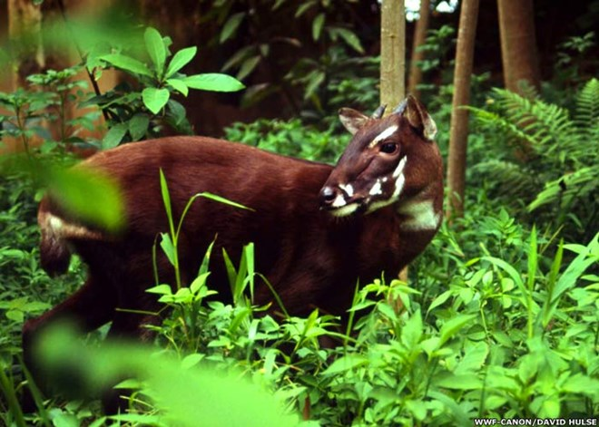

SAOLA
El Saola, que es parte de la familia de los ciervos, está en peligro crítico de extinción. La pérdida de superficie forestal lleva a esta especie de posiblemente unos cientos, a capricho de los cazadores.

BACK HOME